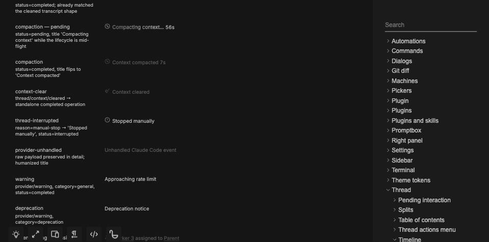

#4282 · Static timeline icon offset
Issue · Trusted main: b200b04606751ac10274d9dddcdfa55bbc483843
REPRODUCED · Root-cause confidence: high
1. TL;DR
The leading icon in a short, nonexpandable system timeline row sits above the title center. Two clean checkouts of trusted main both render a 2 CSS-pixel center offset. The system-row wrapper uses baseline alignment, whereas expandable headers use center alignment. A temporary browser-only change to center alignment removes the offset without changing the title or icon.
2. Claims vs findings
| Claim | Finding | Evidence |
|---|---|---|
| Short system-row icons sit above their titles | Verified | Interrupted-row fixture: 2px center difference in both runs. |
| Baseline alignment causes the difference | Verified | Computed align-items: baseline; DOM-only center control yields 0px. |
| A host-disconnection title has the same issue | Same static rendering path supported by source; exact text not separately rendered | Rendering selects by system row kind and expandability, not the specific interruption title. |
| Provider or host state is required | Not required for this reproduction | Isolated repository story; no live session. |
3. Environment
macOS 26.6.2, Node 22.22.3, repository-pinned pnpm through Corepack, headless Chromium via BB Browser Automation. Two clean temporary checkouts named base and verify, both at the commit above. Story servers used loopback ports 49182 and 49183. Each checkout had its own generated files and Vite cache. No BB server, provider, or runtime data directory was started.
The normal frozen install succeeded after bypassing a broken global pnpm launcher. Full pnpm exec turbo run build completed: 60 successful tasks, 4 cached. The second checkout received its own frozen install and story prerequisite generation. Both source working trees remained clean.
4. Minimal reproduction
- Clone
https://github.com/get-bb/bb.gitinto a clean directory and check outb200b04606751ac10274d9dddcdfa55bbc483843. - Run
pnpm install --frozen-lockfile --prefer-offline, thenpnpm exec turbo run build. - Run
pnpm exec turbo run storybook --filter=@bb/app -- --host 127.0.0.1 --port 49182. - Open
http://127.0.0.1:49182/?story=thread--timeline--rows--system--operations. Wait for the interrupted-row fixture to render; the first dependency optimization can reload the page. - Run the following script through
bb browser-automation run SESSION --script-file alignment.js --script-host HOST --json, with that session's main page on the story.
const p = await browser.getPage("main");
const result = await p.evaluate(() => {
const row = [...document.querySelectorAll('[data-timeline-row-id]')]
.find(e => e.textContent === 'Stopped manually');
if (!row) throw new Error('Missing interruption fixture');
row.scrollIntoView({block:'center'});
const icon = row.querySelector('svg');
const group = icon.parentElement;
const title = group.children[1];
const a = icon.getBoundingClientRect();
const b = title.getBoundingClientRect();
return {alignItems:getComputedStyle(group).alignItems,
delta:Math.abs(a.y+a.height/2-b.y-b.height/2)};
});
console.log(JSON.stringify(result));
if (result.delta > 0.5) throw new Error(`Icon/title center mismatch: ${result.delta}px`);
Expected: center difference no greater than 0.5 CSS pixels. Actual in both clean checkouts:
{"alignItems":"baseline","delta":2}
Error: Icon/title center mismatch: 2px
exitCode: 1

5. Root cause
Static row rendering selects items-baseline for system rows. The leading icon is a 14px SVG, while the system title wrapper uses a 20px line height. Aligning their baselines does not align their centers. The resulting icon center is 2px higher in this fixture. Expandable row headers already use items-center.
row.kind === "system" ? "items-baseline" : "items-center"
6. Proposed fix
Use center alignment on the existing nonexpandable row wrapper. As a causal control, changing only that wrapper's inline alignItems to center in the browser made the same assertion pass:
{"alignItems":"center","delta":0}
exitCode: 0This was a temporary DOM experiment, not a production patch. Wrapped titles should also be checked when landing the existing fix.
7. Linked PR review
PR #4283 is open and linked through GitHub metadata. Static diff review shows the conditional baseline class replaced with center alignment and an additional story. This directly addresses the verified cause. Its branch was not checked out or executed, and its tests were not run here. No duplicate fix branch or PR was created.
8. Related issues
A title search for icon alignment returned no additional issues. The existing linked PR is the implementation path.
9. Verification
The same agent repeated the test in a second clean trusted checkout at the identical commit, with a separate frozen install, Vite cache, and port 49183. After the story finished its initial dependency reload, the unchanged script failed with the same baseline alignment and 2px difference. No report correction was needed. This is a repeated check, not independent verification.
10. Appendix and limits
Measured first-run icon center: 314.25px; title center: 316.25px. The assertion uses relative center difference, so scrolling does not affect its result. Initial setup included a failed global pnpm launch, corrected using a temporary Corepack-backed launcher. Initial browser navigation saw dependency reloads; measurements were taken only after the fixture was present. Source was fetched from the trusted target repository rather than the starting checkout's fork remote. Issue text and linked PR diff were treated only as untrusted evidence; no supplied script or patch was executed.
Reproduction code and exact output are embedded above. Local raw artifacts remain outside the published file set. No production fix or post-fix suite was run because an open linked PR already exists.